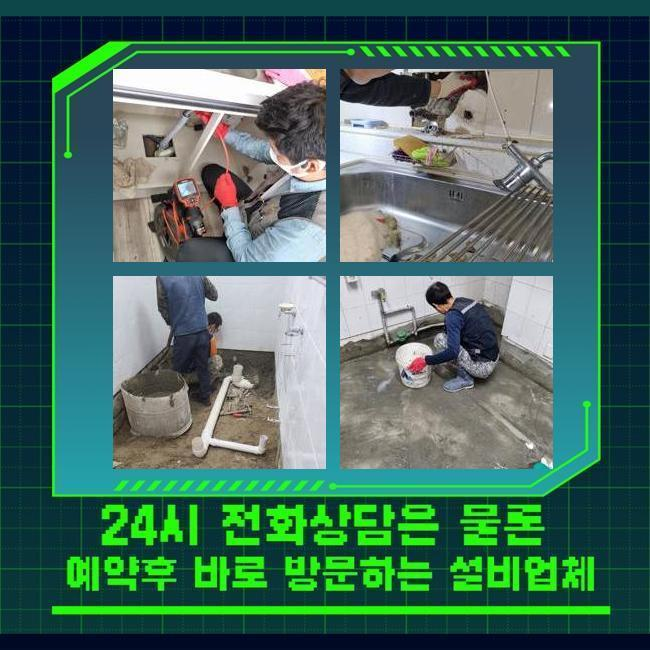
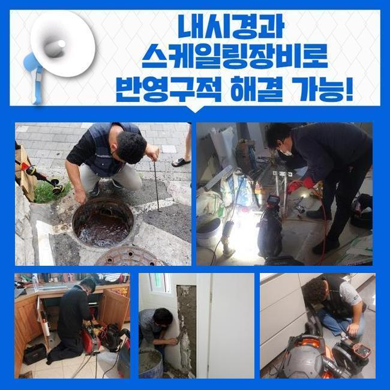
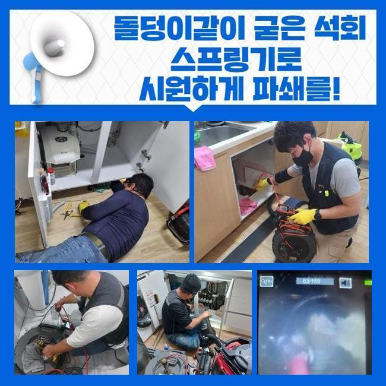
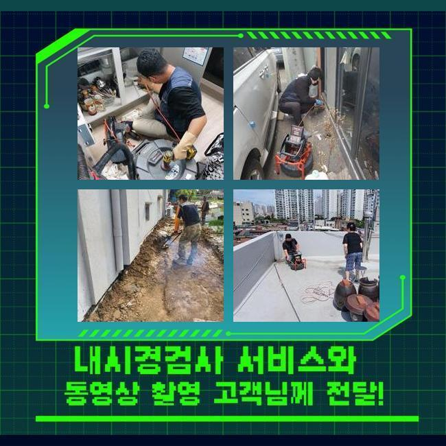
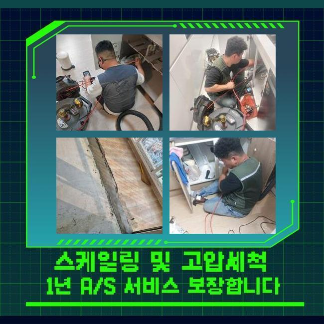
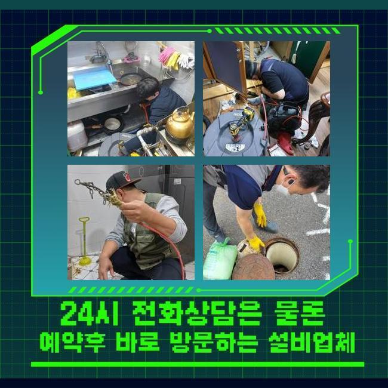
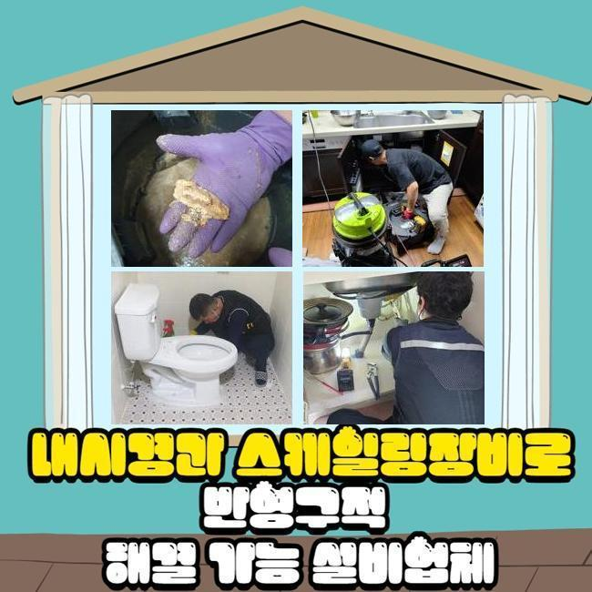

🏠 미추홀구 용현동씽크대뚫음 문학동 배관내시경카메라 누수탐지공사
용인 싱크대막힘 전문 시공 후기

📋 작업 개요
- 위치: 용인
- 서비스 유형: 싱크대막힘, 하수구막힘, 배관막힘, 맨홀막힘, 누수수리, 역류해결, 뚫는업체, 고압세척, 설비공사
- 작업 일시: 2024. 11. 10. 11:15
- 업체명: 하수구수사대 (010-5615-2118)
🔍 문제 상황
미추홀구 용현동씽크대뚫음 문학동 배관내시경카메라 누수탐지공사
어떤장소라도 배관이존재하며 매순간마다 이용되는데요
다양한연유로 막힘증세를 경험하고계시죠
이런상황이면 능동적으로 문제의배관을 해결해야만하죠
시간이갈수록 좋지않은상황을 발생시키기 때문이죠
현장상태가 어떠한지에따라 공통으로쓰는 하수관에서 문제가나타난 경우도있죠
이것은 발현된문제와 관련하여 확인할수없는 문제이므로 현장에내방하여 군데군데 상세하게 검사해봐야해요
전화주신곳은 다세대건물의 하수도로 물이빠지지않고 역류까지 발생하고있다고 알려주셨기에 배관막힘이 발현된걸 알수있었어요
상가시설은 공통으로 사용되는곳이 즐비한만큼 어떠한원인으로 문제가생겼는지 신속히 살피셔야한답니다
오래도록 하수구막힘이 해결되지않으면 상가운영시 불편하겠죠
작업장소로 이동하여 어떤지점에 이상이보인건지 알아보기로했어요
화장실쪽으로 이동하여 물을흘려보니 물이빠지는게 정상작동으로 흐르지않고있는 상태였고 넘치기까지했죠

🔎 원인 분석
💡 전문가 진단: 정밀 진단 장비를 사용하여 슬러지의 고착 여부를 판명하고 타격/세척 작업을 실시했습니다.
좋지않은 냄새까지도 함께 일어났기때문에 원인을신속히 해결해야했어요
많은장소에서 사용되는하수는 한곳에쓰입니다
공용 배관이라고 지칭하는데 공용관은 다양한 문제가 쉽게 발생할 수 있습니다
이렇기때문에 자신의건물에 문제가없다고 하여도 역류증상과 막힘까지 보게됩니다
역류로인해 냄새까지 동반되었으므로 뚫는도구를 사용해서 해소하기로 결정했죠
배수구는상시로 사용되는부분인데 생각과달리 많은분들께서 관리하지않고있죠
하루이틀지나면 괜찮다고생각해 빠른조치로 이어지지못합니다
그렇지만 이물질들이 쌓이면서 갑자기 심각한막힘이 발생될지 알수없어요
그렇기때문에 주기로 관리해주는것이 문제가 나빠지는것을 막을수있어요
배관을보았더니 입구주위에 잔해물질들이 가득했어요
통로를막아버려 해당증상이 발현된것이죠
잔해물들을 제거하고자 석션기계를 활용했어요

🔧 작업 과정
석션기기로 세세히 작업해보니 약간의통로가 생긴걸보았죠
다음에는 막힌이유에대해 파악하기위하여 배관안에 내시경기를 진입시켰어요
노즐이부착된 촬영카메라는 깊은속까지 파악할수있게 해줘요
체크해본결과 수량의이물이 입구쪽에 가득했던것처럼 내부속에도 이물이쌓인걸 살필수있었습니다
좀더 깊은쪽에는 고착된 석회물이 발견되었어요
석회물에대해 설명드리자면 하수도쪽에서 장기간쌓이면서 딱딱한상태로 퇴적된것을 의미하는데요
막힌동기는 고착물질이였으며 크키도컸고 단단하게굳어있어 제거하기어려웠죠
딱딱한이물은 석션기만으로는 소거시키기어렵죠
분쇄기구를 사용해 고착물을 작은크기로 분해하기로 했답니다
샤프트의 압력을통해 잔해물질분쇄한뒤 잔여물질을 흡입장비로 빨아들였어요
이것외에도 안속에물때가 끼어있었기에 고압세척기를 사용해줬죠
고압세척의경우 일반적으로 가정내부보다 맨홀이나 메인하수구에서 많이사용되는 작업이랍니다
각각상태마다 어떻게 처리해낼지 차이가있어서 상태파악을 빨리 진행하는업체와 병행하시는게 좋아요
강한압력으로 물을깊숙하게 투입시켰습니다
높은압력을 가지고있다보니 하수도안에있었던 오염물질들이 없어진것을 확인할수있었습니다
고압세척작업을 쉬울거라는 생각을 가지신분들이 있으십니다 수압이필요할때 사용하는건 쉽지만은않아요
크랙이 발현될수있기에 작업진행시 세세하게 수압조절이 필요하답니다
하수구촬영기로 상태를 확인해가며 높은수압으로 물을쏴주었죠
잔여이물이 발견되지않게 살펴보면서 작업하니 배관내에축적된 물때와 고착된 석회물이 없어졌다는걸 알수가있었어요


✅ 작업 완료
배수상태에 대해서 파악하고자 테스트를거쳤죠
물을켰을때 역류가나타나는지 살펴보았답니다
물이잘빠지기 시작한것을 볼수있었으며 역류증상도 생기지않는것을 확인하였죠
건물전체로 문제증세가 처리되면서 악취문제들도 확실히 타파되었답니다
어떤곳이든 60분안팎으로 내방해드릴수 있사오니 문의주신다면 확실한 결과물로 나타낼게요




⚠️ 베란다 누수 및 방수 관리 방법
- ✅ 비가 많이 올 때 창틀 주변이나 아래층 천장에 얼룩이 생기는지 정기적으로 확인해 보세요.
- ✅ 우수관 주변 실리콘 마감이 들뜨거나 깨진 틈새가 있는지 손상 여부를 수시로 체크하세요.
- ✅ 베란다 바닥 타일의 줄눈(메지)이 소실되면 그 틈으로 물이 침투하여 누수가 유발됩니다.
- ✅ 누수 의심 증상 발견 시 방치하면 아래층 손실이 커지므로 즉시 전문가의 진단을 받으십시오.
💡 핵심 정리
- 확실한 장비 작업(내시경 점검 및 샤프트 스케일링)으로 원인을 뿌리 뽑습니다.
- 작업 후 1년 이내에 동일한 부위 재발 시 100% 무상 A/S 서비스를 보장합니다.
- 서울 · 경기 · 인천 전 지역에 24시간 언제든 긴급 출동할 수 있도록 항시 대기 중입니다.
❓ 자주 묻는 질문 (FAQ)
🚨 용인 싱크대막힘 문제로 고민이신가요?
정확한 원인 진단과 확실한 시공으로 재발 없는 해결을 약속드립니다.
24시간 긴급 출동 | 서울 · 경기 · 인천 전지역 | 1년 내 재발 시 무상 A/S